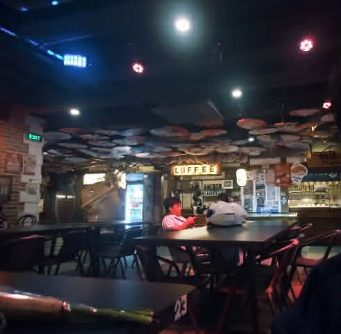
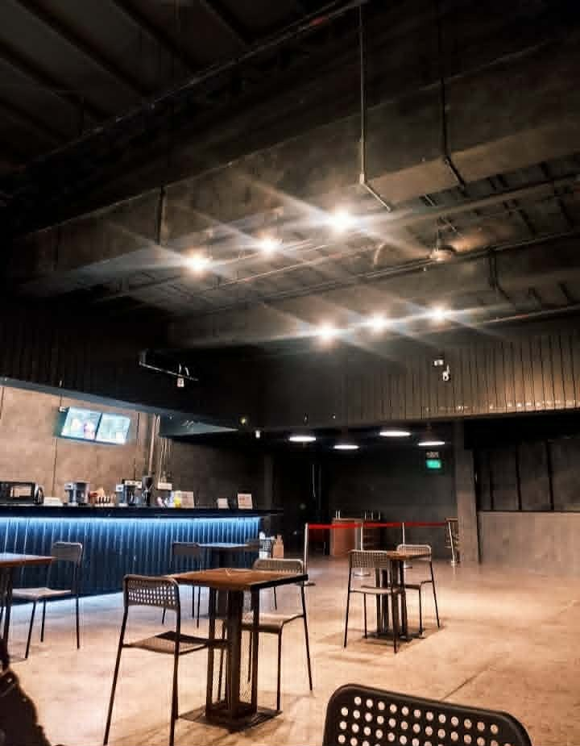

<!-- the first part -->

<body style="background-color: black; color: white; display: flex; flex-direction: column; align-items: center; text-align: center;"> </body>

    <h1>Cubao Midnight Brews</h1>
         <br>
    <p>A sanctuary for restless souls and dark infusions under the Manila moon.</p>

    <section>
      <br><br>
        <h2>Juvy Guira</h2>
        <p>Juvy Guira | 21 | Future Educator and Tech Enthusiast. As an ICT Education major, my daily routine revolves around three main things: 
            <br> troubleshooting code, lesson planning, and chasing the ultimate midnight coffee fix.</p>
        
    </section>
    <br><br><br>

     <!-- the 2nd part | recommended places by me -->
     <h2>Cubao Midnight Brews</h2>
      <br>

      <article>
  <h3>Gala Food Park</h3>
  <p>Pasay City | Japan-Inspired Food Park</p>
  <p>A neon-drenched sanctuary for late-night food runs. It gives off major Tokyo night-market vibes with a massive lineup of Japanese street eats, 
    <br>gyudon bowls, skewers, and desserts—perfect when you want to indulge your nocturnal cravings in a lively open-air setting.</p>
  
</article>
<br><br>
<article>
  <h3>Warehouse Coffee</h3>
  <p>Sampaloc, Manila | Industrial-Style Student Cafe</p>
  <p>Tucked right in the heart of the U-Belt, this spot delivers a dark, raw-concrete aesthetic with serious caffeine heavyweights. 
    <br> Its the ultimate dark horse hideout for fueling intense study sessions or retreating from the chaotic Manila heat.</p>
  
</article>
<br><br>
<article>
  <h3>La Cathedral Cafe</h3>
  <p>Intramuros, Manila | Rooftop Heritage Cafe</p>
  <p>Nestled right behind the historic Manila Cathedral, this rooftop gem serves up unmatched view-side dining. 
    <br> The ambient warm lighting, wrought-iron fixtures, and up-close backdrop of Spanish-colonial architecture 
    <br>make it one of the most dramatically romantic places in the walled city for night coffee or a late-afternoon meal.</p>
  
</article>